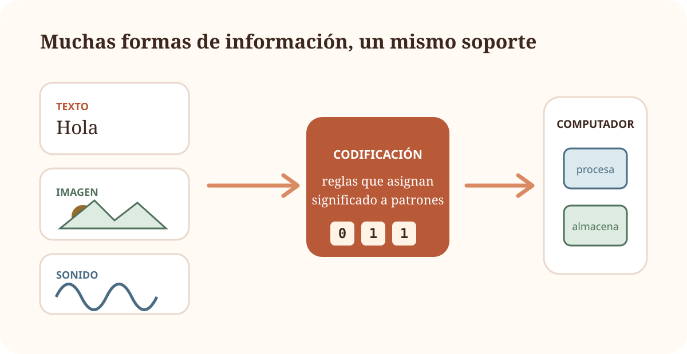
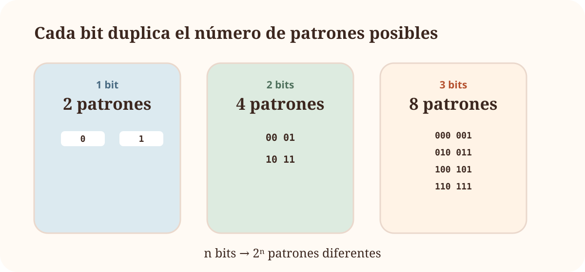
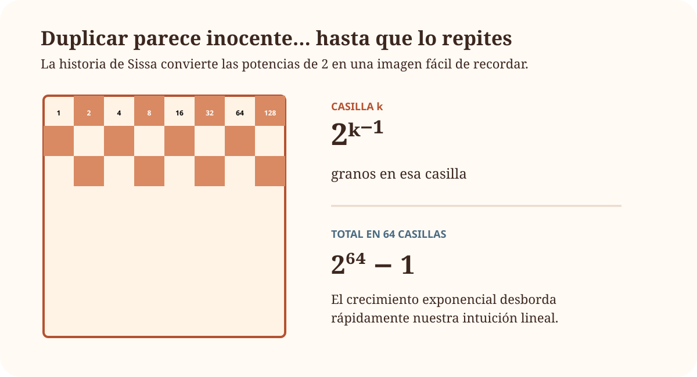
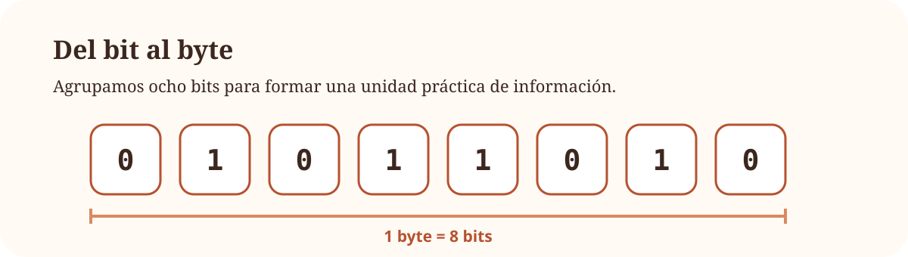

2 Tema 1 · Introducción a los computadores
Del mundo físico a la información digital
TEMA 1 · PROTOTIPO VISUAL
3 ¿Qué hace realmente un computador?
Escribimos, escuchamos música, enviamos fotografías o ejecutamos programas. Para nosotros son actividades muy distintas. Para el computador, todas terminan convirtiéndose en información representada mediante patrones que puede almacenar y transformar.
Este tema empieza construyendo esa idea desde cero.

Objetivos
En este primer recorrido vamos a construir cuatro ideas que utilizaremos durante todo el curso:
- un computador recibe, representa, almacena y procesa información;
- un mismo patrón físico puede adquirir significados distintos según el código utilizado;
- con \(n\) bits podemos construir \(2^n\) patrones diferentes;
- bits y bytes son la base para expresar información y capacidad.
3.1 1.1 ¿Qué es un computador?
UNA PRIMERA IDEA
3.1.1 Antes de abrir la caja
Un portátil, un teléfono, una consola y la centralita de un automóvil tienen aspectos y usos muy distintos. Sin embargo, podemos empezar a entenderlos con una idea común:
reciben información, realizan un procesamiento y producen algún resultado.
Todavía no necesitamos saber qué procesador utilizan ni qué ocurre dentro de la memoria.
3.1.2 Información y datos
Imagina que recibes únicamente este valor:
¿Es una temperatura? ¿Una edad? ¿El número de estudiantes de un grupo? ¿Una dirección de memoria?
El símbolo por sí solo no nos lo dice. Necesitamos conocer qué representa y cómo debe interpretarse.
Concepto clave
Un dato es una representación que puede ser almacenada, transmitida o procesada. Hablamos de información cuando esa representación se interpreta dentro de un contexto y adquiere significado.
3.1.3 Codificar es acordar una representación
No hace falta empezar con binario para entender qué significa codificar. Un semáforo ya utiliza un código:
- rojo → detenerse;
- verde → avanzar.
La señal física y su significado no son la misma cosa. Hay una regla de interpretación que los relaciona.
→avanzar
Ahora podemos trasladar la misma idea a símbolos:
| Patrón | Significado acordado |
|---|---|
00 |
A |
01 |
B |
10 |
C |
11 |
D |
Otro código podría utilizar una correspondencia distinta. Lo esencial es que quien produce y quien interpreta los datos compartan las mismas reglas.
Importante
El computador no «ve» una letra A, una fotografía o una canción como nosotros. Manipula representaciones físicas. El significado aparece al interpretar esas representaciones según un código.
3.1.4 Hardware y software: dos piezas de una misma historia
Hardware
Los componentes físicos capaces de almacenar, mover y transformar representaciones.
Software
Las instrucciones y programas que indican qué transformaciones debe realizar el hardware.
No profundizaremos todavía en ninguno de los dos. De momento basta una idea: el hardware hace posible el procesamiento; el software determina qué procesamiento queremos realizar.
Entrada, procesamiento y salida
Identifica una posible entrada, el procesamiento y la salida en cada caso:
- una calculadora suma dos números;
- una cámara de móvil toma una fotografía;
- una aplicación de navegación calcula una ruta.
Solución
En una calculadora, los números y la operación son la entrada; realizar la suma es el procesamiento; el valor mostrado es la salida.
En una cámara, la luz captada por el sensor es una entrada; el sistema procesa las medidas del sensor; la imagen almacenada o mostrada es una salida.
En una aplicación de navegación, origen, destino y datos cartográficos actúan como entradas; el cálculo de la ruta es el procesamiento; la ruta propuesta es la salida.
Resumen
Qué deberías llevarte de 1.1
- Un computador puede entenderse inicialmente como un sistema que transforma datos.
- Los datos necesitan reglas de interpretación para adquirir significado.
- Codificar consiste en establecer una correspondencia entre información y representaciones.
- Hardware y software cooperan para realizar el procesamiento.
3.2 1.2 ¿Cómo representa la información?
::: {.lesson-opening lesson-opening-rust} ::: {.lesson-opening-copy} DE MUCHAS COSAS A DOS ESTADOS
3.2.1 Letras, imágenes, sonido… ¿con solo 0 y 1?
Un computador debe manejar tipos de información muy diferentes. La estrategia fundamental consiste en representarlos mediante combinaciones de elementos que puedan distinguirse de forma fiable.
Dos estados son especialmente cómodos: encendido/apagado, tensión alta/baja, presencia/ausencia de carga…
Los símbolos 0 y 1 nos permiten nombrar esos dos estados. :::
:::
Importante
En este punto, 0 y 1 no deben entenderse únicamente como números. Son también símbolos para representar dos estados distinguibles.
3.2.2 El bit: la pieza mínima
Llamamos bit a una unidad que puede encontrarse en uno de dos estados posibles.
Antes de escribir ninguna fórmula, observemos qué ocurre cuando agrupamos bits.

Cada vez que añadimos un bit, cada patrón anterior puede terminar en 0 o en 1. Por eso el número de combinaciones se duplica.
<div>
<span class="eyebrow">PRUÉBALO</span>
<h4>Construye el espacio de combinaciones</h4>
</div>
<div class="bit-explorer-control">
<label>Número de bits: <strong data-bit-value>3</strong></label>
<input type="range" min="1" max="6" value="3" step="1" aria-label="Número de bits">
</div>Ahora sí tiene sentido formalizar el patrón observado:
\[ n\text{ bits}\quad\longrightarrow\quad 2^n\text{ patrones} \]
Concepto clave
Con \(n\) bits pueden construirse \(2^n\) patrones distintos. El número de bits determina cuántas posibilidades podemos distinguir; el código determina qué significa cada posibilidad.
3.2.3 Una historia para recordar las potencias de 2
La leyenda de Sissa y el tablero de ajedrez utiliza una regla muy sencilla: colocar un grano en la primera casilla y duplicar la cantidad en cada casilla siguiente.

La historia no es importante por el ajedrez. Es útil porque muestra una idea que reaparecerá constantemente en informática: duplicar muchas veces produce cantidades enormes mucho antes de lo que sugiere nuestra intuición.
3.2.4 ¿Cuántos bits necesito?
Hasta ahora hemos preguntado cuántos patrones obtenemos con un número conocido de bits. Ahora invertimos la pregunta.
Codificar los diez dígitos
Queremos asignar un patrón binario diferente a cada dígito decimal (0 a 9). ¿Cuántos bits necesitamos como mínimo?
Solución
Con 3 bits disponemos de:
\[ 2^3=8 \]
patrones, que no son suficientes.
Con 4 bits disponemos de:
\[ 2^4=16 \]
patrones. Por tanto, el mínimo es 4 bits.
La pregunta general es:
Si necesito distinguir \(N\) posibilidades, ¿cuál es el menor número de bits que proporciona al menos \(N\) patrones?
Buscamos el menor \(n\) que cumpla:
\[ 2^n\ge N \]
y podemos expresarlo mediante:
\[ n=\lceil \log_2 N\rceil \]
El logaritmo aparece así después de entender la pregunta que resuelve.
::: {.split-layout split-layout-highlight} ::: {.split-copy} ### La misma relación, en dos direcciones
Si conocemos los bits, usamos una potencia:
\[ n \longrightarrow 2^n \]
Si conocemos cuántos símbolos queremos distinguir, necesitamos invertir la relación:
\[ N \longrightarrow \lceil\log_2N\rceil \] :::
::: {.split-visual formula-question} ¿cuántos patrones tengo? \(2^n\)¿cuántos bits necesito? \(\lceil\log_2N\rceil\) ::: :::
3.2.5 Del bit al byte
Trabajar con bits individuales resulta poco práctico. Por convenio, una agrupación de ocho bits forma un byte.

A partir del byte expresamos tamaños mayores.
3.2.6 Bit y byte: una diferencia pequeña en la letra, enorme en el cálculo
En comunicaciones es habitual expresar velocidades en bits por segundo. En almacenamiento es habitual expresar tamaños en bytes.
Por eso:
Como \(1\ \text{byte}=8\ \text{bits}\), la diferencia es un factor 8.
Tiempo de descarga
Ignorando pérdidas y sobrecargas, ¿cuánto tardaría en descargarse un archivo de 1 GB mediante una conexión de 100 Mb/s? Utiliza unidades decimales.
Solución
Primero expresamos el archivo en bits:
\[ 1\ \text{GB}=8\ \text{Gb}=8000\ \text{Mb} \]
Después usamos:
\[ t=\frac{\text{cantidad de información}}{\text{velocidad}} \]
por lo que:
\[ t=\frac{8000\ \text{Mb}}{100\ \text{Mb/s}}=80\ \text{s} \]
En condiciones ideales, la descarga tardaría aproximadamente 80 segundos.
Resumen
Qué deberías llevarte de 1.2
- Un bit permite distinguir dos estados.
- Cada bit adicional duplica el número de patrones disponibles.
- \(n\) bits producen \(2^n\) patrones.
- \(\lceil\log_2N\rceil\) responde a la pregunta «¿cuántos bits necesito para distinguir \(N\) posibilidades?».
- Ocho bits forman un byte.
byBno son intercambiables: bit y byte representan cantidades distintas.
3.3 La historia continúa
Hasta aquí hemos respondido dos preguntas:
La siguiente pregunta surge de forma natural:
Si ya tenemos datos representados como bits, ¿dónde se guardan y quién los procesa?
Ahí abriremos por primera vez la caja: CPU, memoria y entrada/salida.